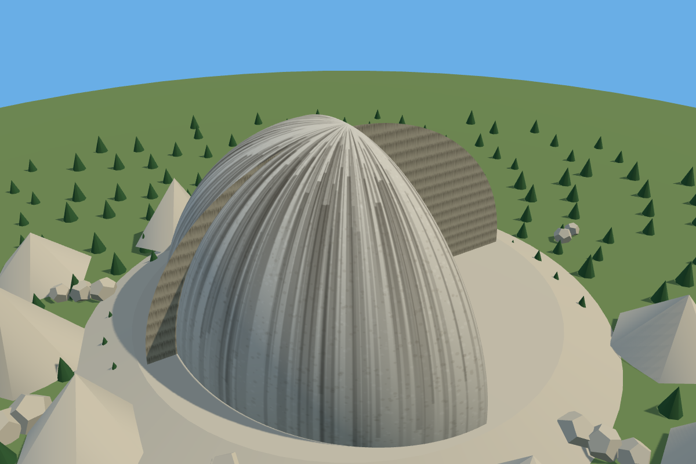
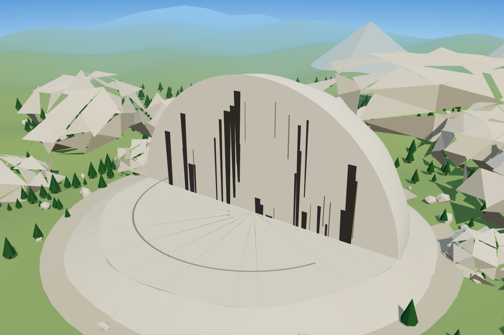
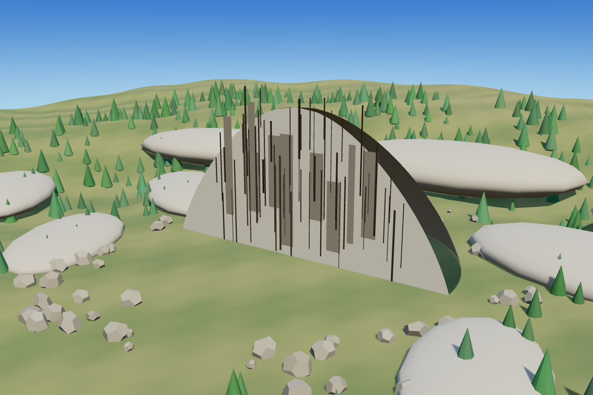
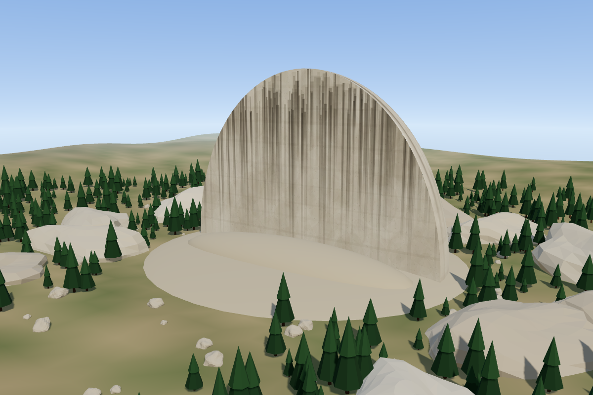
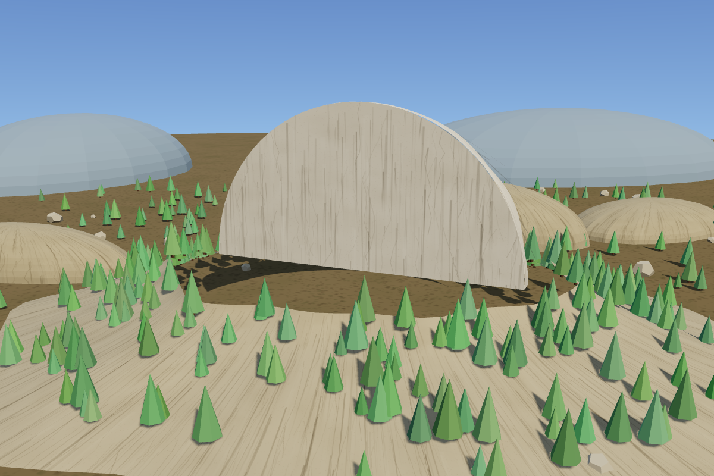
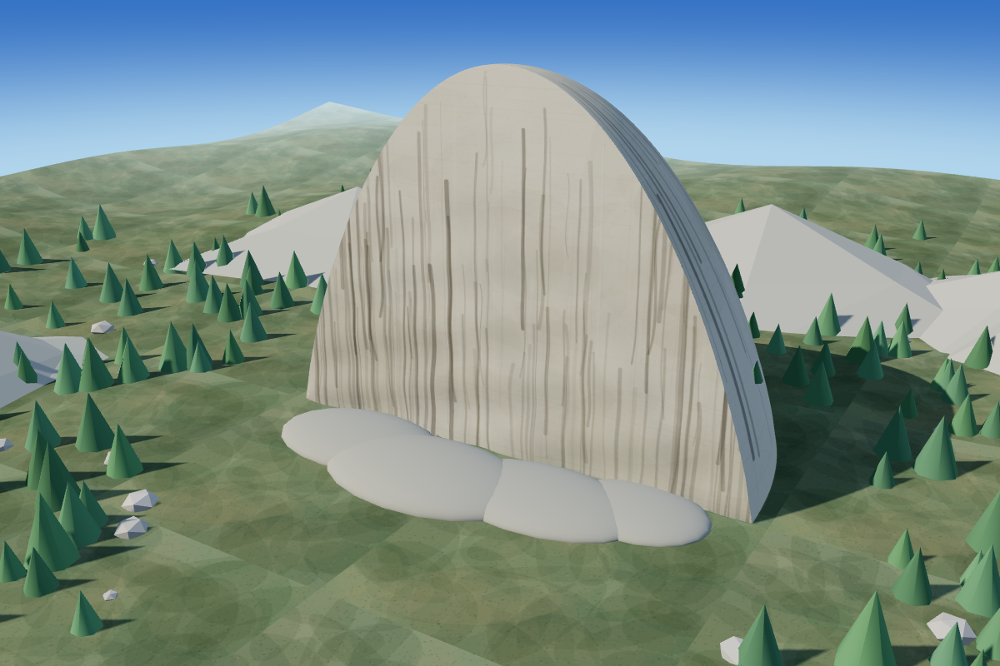

MINIMAL3.5/10 · 4.17s
Rounded shells and a circular base look like constructed domes instead of a sheer granite cliff.
Yosemite · Muse Ember · one original output per effort level

Rounded shells and a circular base look like constructed domes instead of a sheer granite cliff.

Shows a flat semicircular slab on a circular base; the black streaks and terrain feel artificial.

Cliff face is visible, but looks like a thin curved wall and the nearby rounded plates are implausible.

Better sheer granite wall and forest scale, though the rock still resembles a thin slab.

Recognizable cut dome with forest, but floating or overhanging base and rounded background forms weaken realism.

Best rock shading and forest terrain of this set, with a clear cut-dome outline; geometry is still simplified.